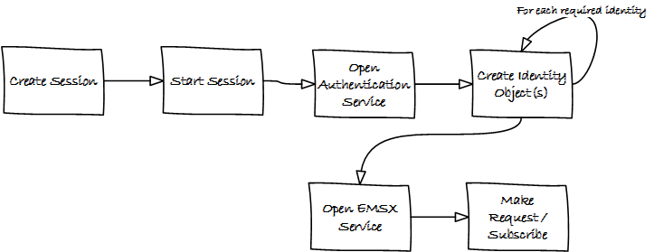

Zero Footprint Deployment (ZFP)¶
Traditionally, Bloomberg soultions are connected via pair of Bloomberg appliances which are deployed at the customer’s site(s). The zero footprint solution offers a lighter technical footprint to better meet the customer needs. A zero footprint solution does not require Bloomberg hardware and there will be no cost associated with racking and stacking the hardware at the customer’s data center. With the zero footprint soultion, the software that is normally installed in the appliance runs on the Bloomberg cloud or in a Bloomberg managed virtual private cloud in AWS (Amazon Web Services). The zero footprint solution is accessible via both internet and private leased lines.
End-Point¶
Important
Prior to connecting, customer must create an endpoint to Bloomberg service on AWS. (Amazon Web Services)
Production:
Production (China):
Beta:
Port Number:
End-Point Discovery & Connectivity¶
ZFP over Internet:
ZFP over Leased Line(s):
Important
The client should always use the host name listed below and not the actual IP addresses.
TCP or SOCKS Proxy¶
As of SDK 3.14.x.x, the SOCKS proxy is not supported in Bloomberg API.
Concurrent Connection¶
The maximum concurrent connection allowed is 12 per certificate. For clients connecting via internet,
How to Install serverapi.exe¶
Please follow the following steps to install and register the installer with Bloomberg Enterprise Solutions with the assistance from EMSX Implementation team.
Linux Environment¶
The following example is based on the linux environment.
- Run serverapi.exe
# ./serverapiinstaller64
- You will see the following message
# ./serverapiinstaller64
logging to /tmp/bloomberg/install.2019111211.130037.log
Bloomberg ECD Installer for Linux (64-bit)
Version 3.2.2.0
Warning: This program is protected by copyright law and international treaties.
Unauthorized reproduction or distribution of this program, or any portion of
it, may result in severe civil and criminal penalties, and will be prosecuted
to the maximum extent possible under law.
Would you like to continue? (Y/N):
- Type:- Y
Would you like to continue? (Y/N): Y
Checking connectivity to Bloomberg ...
a) via Bloomberg Network to [ Hostname = 208.134.161.62 Port = 8194 ] ...
Succeeded.
[ Hostname = 208.134.161.158 Port = 8194 ] ...
Succeeded.
[ Hostname = 208.134.161.18 Port = 8194 ] ...
Succeeded.
[ Hostname = 208.134.161.179 Port = 8194 ] ...
Succeeded.
b) via the Internet to [ Hostname = api1.bloomberg.net Port = 8194 ] ...
Could not resolve host: [ Hostname = api1.bloomberg.net Port = 8194 ]
Error.
[ Hostname = api2.bloomberg.net Port = 8194 ] ...
Could not resolve host: [ Hostname = api2.bloomberg.net Port = 8194 ]
Error.
[ Hostname = api3.bloomberg.net Port = 8194 ] ...
Could not resolve host: [ Hostname = api3.bloomberg.net Port = 8194 ]
Error.
[ Hostname = api4.bloomberg.net Port = 8194 ] ...
Could not resolve host: [ Hostname = api4.bloomberg.net Port = 8194 ]
Error.
[ Hostname = api5.bloomberg.net Port = 8194 ] ...
Could not resolve host: [ Hostname = api5.bloomberg.net Port = 8194 ]
Error.
[ Hostname = api6.bloomberg.net Port = 8194 ] ...
Could not resolve host: [ Hostname = api6.bloomberg.net Port = 8194 ]
Error.
[ Hostname = api7.bloomberg.net Port = 8194 ] ...
Could not resolve host: [ Hostname = api7.bloomberg.net Port = 8194 ]
Error.
[ Hostname = api8.bloomberg.net Port = 8194 ] ...
Could not resolve host: [ Hostname = api8.bloomberg.net Port = 8194 ]
Error.
Internet connectivity unavailable. Connecting via the Bloomberg Network.
- Select the appropriate network option if it doesn’t select by default (private vs. public/internet)
Select Product Class
1) blpddm Software that provides development access to distribute data locally or contribute data to Bloomberg.
2) ServerApi Provides access to Bloomberg real-time streaming and static data
0) Quit
- Select:- 2 for Server API
Please enter selection: 2
Installation path:
'/opt/local'
Use this path? (Y/N/Q):
- Select:- York
Creating the root directory /opt/local ...
done.
Downloading latest installer ...
done.
logging to /tmp/bloomberg/install.2019111211.130037.log
Beginning new install ...
Note
If the default port is already being used by a different service it may show the following message:
*** WARNING: Port conflict detected with other service.
The port of the Desktop will conflict with the ServerApi should installation proceed. If you still want to install
ServerApi, you will need to specify a different port number.
Do you want to continue with the installation? (Y/N) [N]:
- Select:- Y and enter the port
Do you want to continue with the installation? (Y/N) [N]:y
Please enter ServerApi listen port: [8294]:8294
- Select the version:-
Versions available for ServerApi
1) 3.86.5.1 Linux64 ServerAPI 2017-06
2) 3.88.0.1 Linux64 ServerAPI 2017-08
3) 3.90.3.1 Linux64 ServerAPI 2017-10
4) 3.90.6.1 Linux64 ServerAPI 2018-01
5) 3.98.5.1 Linux64 ServerAPI 2018-04
6) 3.102.0.1 Linux64 ServerAPI 2018-05
7) 3.106.0.1 Linux64 ServerAPI 2018-07
8) 3.112.3.1 Linux64 ServerAPI 2018-10
9) 3.112.4.1 Linux64 ServerAPI 2019-01
10) 3.114.9.1 Linux64 ServerAPI 2019-04
11) 3.118.9.1 Linux64 ServerAPI 2019-07
12) 3.120.2.0 Linux64 Development B-Pipe 2019-10 (64-bit)
13) 3.120.2.1 Linux64 ServerAPI 2019-10
0) Quit
Please enter version of ServerApi that you want to install:
- Select the latest:-
Please enter version of ServerApi that you want to install: 13
Downloading ServerApi components ...
- Enter other information:-
Enter the following information:
Country (e.g., USA):
State (e.g., NY):
City or Town (e.g., New York):
Company Name (e.g., Bloomberg L.P.):
Department Name (e.g., Equity Trading)
- Finished:-
Enter the following information:
Country (e.g., USA): USA
State (e.g., NY): NY
City or Town (e.g., New York): New York
Company Name (e.g., Bloomberg L.P.): My Firm
Department Name (e.g., Equity Trading): Futures Trading
Creating certificate ...
done.
Registering server ...
done.
done.
Call Bloomberg's Global Customer Support at +1 (212) 318-2000 and ask for the Global Installs desk. The Bloomberg representative will ask you to read your registration number over the phone four characters at a time.
Your registration key is:
123b-4567-1ab2-12c9-g66f-964e-h50b-fa48-c78t-a123
This key was also saved in regkey.txt in the ServerApi root directory.
ServerApi installation completed. Press ENTER to quit:
Note
Once the registration process is completed. EMSX Implementation team globally will assist with configuring the Server Side EMSX API with various execution destinations per client request.
Windows Environment¶
The following example is based on the windows environment.
- Run serverapi.exe
C:\temp>serverapiinstaller.exe
- You will see the following message
C:\temp>serverapiinstaller.exe
logging to C:\temp\install.2016102610.152444.log
Bloomberg ECD Installer for Windows (32-bit)
Version 3.2.2.0
Warning: This program is protected by copyright law and international treaties.
Unauthorized reproduction or distribution of this program, or any portion of
it, may result in severe civil and criminal penalties, and will be prosecuted
to the maximum extent possible under law.
logging to C:\temp\install.2016102610.152444.log
Bloomberg ECD Installer for Windows (32-bit)
Version 3.2.2.0
Warning: This program is protected by copyright law and international treaties.
Unauthorized reproduction or distribution of this program, or any portion of
it, may result in severe civil and criminal penalties, and will be prosecuted
to the maximum extent possible under law.
Would you like to continue? (Y/N):
- Type:- Y
Would you like to continue? (Y/N): y
Checking connectivity to Bloomberg ...
a) via Bloomberg Network to [ Hostname = 208.134.161.62 Port = 8194 ] ...
Succeeded.
[ Hostname = 208.134.161.158 Port = 8194 ] ...
Succeeded.
[ Hostname = 208.134.161.18 Port = 8194 ] ...
Succeeded.
[ Hostname = 208.134.161.179 Port = 8194 ] ...
Succeeded.
b) via the Internet to [ Hostname = api1.bloomberg.net Port = 8194 ] ...
Succeeded.
[ Hostname = api2.bloomberg.net Port = 8194 ] ...
Succeeded.
[ Hostname = api3.bloomberg.net Port = 8194 ] ...
Succeeded.
[ Hostname = api4.bloomberg.net Port = 8194 ] ...
Succeeded.
[ Hostname = api5.bloomberg.net Port = 8194 ] ...
Succeeded.
[ Hostname = api6.bloomberg.net Port = 8194 ] ...
Succeeded.
[ Hostname = api7.bloomberg.net Port = 8194 ] ...
Succeeded.
[ Hostname = api8.bloomberg.net Port = 8194 ] ...
Succeeded.
Which of the above routes will you use to connect to Bloomberg? (a/b):
- Select the appropriate network option (private vs. public/internet)
Which of the above routes will you use to connect to Bloomberg? (a/b): b
Bloomberg Network connectivity unavailable. Connecting via the Internet.
Select Product Class
1) blpddm Software that provides development access to distribute data locally or contribute data to Bloomberg.
2) ServerApi Provides access to Bloomberg real-time streaming and static data
0) Quit
Please enter selection:
- Select:- 2 for Server API
Please enter selection: 2
Installation path:
'C:\'
Use this path? (Y/N/Q):
- Select:- Y
Use this path? (Y/N/Q): y
Downloading latest installer ...
done.
logging to C:\temp\install.2016102610.152444.log
Beginning new install ...
Note
If the default port is already being used by a different service it may show the following message:
*** WARNING: Port conflict detected with other service.
The port of the Desktop will conflict with the ServerApi should installation proceed. If you still want to install
ServerApi, you will need to specify a different port number.
Do you want to continue with the installation? (Y/N) [N]:
- Select:- Y and enter the port
Do you want to continue with the installation? (Y/N) [N]:y
Please enter ServerApi listen port: [8294]:8294
- Select the version:-
Versions available for ServerApi
1) 3.46.6.0 Windows ServerAPI 2014-07
2) 3.48.8.1 Windows ServerAPI 2014-09
3) 3.48.9.1 Windows ServerAPI 2014-11
4) 3.50.7.1 Windows ServerAPI 2015-01
5) 3.56.4.1 Windows ServerAPI 2015-04
6) 3.60.0.1 Windows ServerAPI 2015-07
7) 3.64.5.1 Windows ServerAPI 2015-10
8) 3.70.0.1 Windows ServerAPI 2016-01
9) 3.72.2.1 Windows ServerAPI 2016-04
10) 3.82.3.1 Windows ServerAPI 2016-10
11) 3.46.6.0 Windows64 ServerAPI 2014-07
12) 3.48.8.1 Windows64 ServerAPI 2014-09
13) 3.48.9.1 Windows64 ServerAPI 2014-11
14) 3.50.7.1 Windows64 ServerAPI 2015-01
15) 3.56.4.1 Windows64 ServerAPI 2015-04
16) 3.60.0.1 Windows64 ServerAPI 2015-07
17) 3.64.5.1 Windows64 ServerAPI 2015-10
18) 3.70.0.1 Windows64 ServerAPI 2016-01
19) 3.72.2.1 Windows64 ServerAPI 2016-04
20) 3.82.3.1 Windows64 ServerAPI 2016-10
0) Quit
Please enter version of ServerApi that you want to install:
- Select the latest:-
Please enter version of ServerApi that you want to install: 20
Downloading ServerApi components ...
Enter other information:-
Enter the following information:
Country (e.g., USA): State (e.g., NY): City or Town (e.g., New York): Company Name (e.g., Bloomberg L.P.): Department Name (e.g., Equity Trading):
Finished:-
Enter the following information:
Country (e.g., USA): USA
State (e.g., NY): NY
City or Town (e.g., New York): New York
Company Name (e.g., Bloomberg L.P.): Bloomberg LP
Department Name (e.g., Equity Trading): EMSX
Creating certificate ...
done.
Registering server ...
done.
Do you want to install ServerApi as a Windows Service? (Y/N): y
Installing ServerApi as a windows Service...
service ServerApi configured for restart on first error
done
done.
*** Please reboot your computer for changes to take effect ***
Call Bloomberg's Global Customer Support at +1 (212) 318-2000 and ask for the
Global Installs desk. The Bloomberg representative will ask you to read your
registration number over the phone four characters at a time.
Your registration key is:
321c-5ad5-7fa8-2954-1930-abb0-b64c-ecaf-1505-64d4
Note
Once the registration process is completed. EMSX Implementation team globally will assist with configuring the Server Side EMSX API with various execution destinations per client request.
Creating User Identities¶
The steps involved in connecting to the EMSX API on the desktop are as follows:-
In the server environment, the user identities must be created and cached prior to the making requests. Therefore, the process would look as follows:-
The first new step is to open the authentication service. This is done in the same way as for any other service in the Bloomberg API. For example:-
d_authsvc = "//blp/apiauth";
session.openServiceAsync(d_authsvc);
Once the service is opened, we need to create and send an authorization request. To create an identity for a specific user, you will need the AuthID for the user. This is the name the user is known by in the EMRS system for your server. The values for these names will have been agreed with you as part of the implementation of the server, or subsequently when adding a new user. Also, an IP address is required. The only requirement for this IP address is that it is unique amongst all the identities generated for a session. You can create and send the request as follows:-
private Identity userIdentity;
*
*
*
Service authService = session.getService(d_authsvc);
Request authReq = authService.createAuthorizationRequest();
authReq.set("authId", authID);
authReq.set("ipAddress", appIP);
userIdentity = session.createIdentity();
authRequestID = new CorrelationID();
try
{
session.sendAuthorizationRequest(authReq, userIdentity, authRequestID);
}
catch (Exception e)
{
System.out.println("Unable to send authorization request: " + e.getMessage());
}
In the above code, you can see that an empty identity object is created using session.createIdentity(). This is the object that will be populated once successful authentication has been achieved, and it is the object that will need to be cached.
We will receive a Response event for the Authentication service. In the example below, we use a CorrelationID to identify messages from the Authentication service, and check for success or failure:-
if(msg.correlationID()==authRequestID) {
if(msg.messageType().equals(AUTHORIZATION_SUCCESS)) {
System.out.println("Authorised...Opening EMSX service...");
System.out.println("Seat Type: " + userIdentity.seatType().toString());
session.openServiceAsync(d_service);
} else if(msg.messageType().equals(AUTHORIZATION_FAILURE)) {
System.out.println("Authorisation failed...");
System.out.println(msg.toString());
wait(1000);
// Automatically retry...
sendAuthRequest(session);
} else {
System.out.println("Unexpected authorisation message...");
System.out.println(msg.toString());
}
}
When we receive the successful authorization, we can continue with opening the usual EMSX service. If multiple authorization requests have been sent, for a number of different UUIDs, it is necessary to wait for all the responses before being able to use all the identity objects.
In the above code, you will see that we examine the ‘seatType’ of the identity. The seat type in this case will be either BPS or non-BPS.
Using User Identities¶
When a client application connects to Bloomberg via the API on the desktop, it does so by leveraging the identity of the logged in Bloomberg terminal user. This means that when a request or subscription object is received by the Bloomberg infrastructure, the target user can be identified using the desktop credential.
In the server environment, there is no Bloomberg terminal, and therefore no implied user can be identified. Moreover, the server is capable of connecting to any number of users, simultaneously. Therefore, the application making the call must indicate which user is the intended target. This is done through the creation and use of Identity object.
An Identity object represents a specific Bloomberg UUID. Once created, an Identity object can be cached for 24hrs, and used with every sendRequest() and subscribe() call.
Identity objects are live, that is they remain connected to Bloomberg in real-time and are capable of receiving events. We recommend that an identity is recreated every 24hrs, to ensure that it picks up the latest changes to any user settings.
Any number of user Identity object can be created by a server-side application. If the application uses the identities of real traders within a firm, then each trader would have an identity created to represent them in the server application. The server application would, perhaps, receive an instruction from the upstream client-side application to create an order in a trader’s blotter. The server application would select the appropriate user identity from the cache and add it to the request.
Migrating the existing desktop application call to a server application simply involves changing all sendRequest() and subscribe() calls to include the appropriate identity, as follows:-
DAPI:
session.sendRequest(request, requestID);
session.subscribe(subscriptions);
Server:
session.sendRequest(request, Identity, requestID);
session.subscribe(subscriptions, Identity);
Desktop vs. Server Authentication:-
Desktop:
d_ioi = "//blp/rankapi-beta"
d_host = "localhost"
d_port = 1234
Server:
d_ioi = "//blp/rankapi-beta"
d_auth = "//blp/apiauth"
d_host = "abc.com"
d_port = 1234
d_user = "myAuthID"
d_ip = "10.20.30.40"
Set authorization request:
def sendAuthRequest(self, session):
authService = session.getService(d_auth)
authReq = authService.createAuthorizationRequest()
authReq.set("emrsID", d_user)
authReq.set("ipAdress", d_ip)
self.identity = session.createIdentity()
print ("Sending authorization rquest: %s" % (authReq))
session.sendAuthorizationRequest(authReq, self.identity)
print ("Authorization request sent.")
...
def processAuthorizationStatusEvent(self, event):
print("Processing AUTHORIZATION_STATUS event")
for msg in event:
print("AUTHORIZATION_STATUS message: %s" % (msg))
...
def processEvent(self, event, session):
try:
...
elif event.eventType() == blpapi.Event.AUTHORIZATION_STATUS:
self.processAuthorizationStatusEvent(event)
...